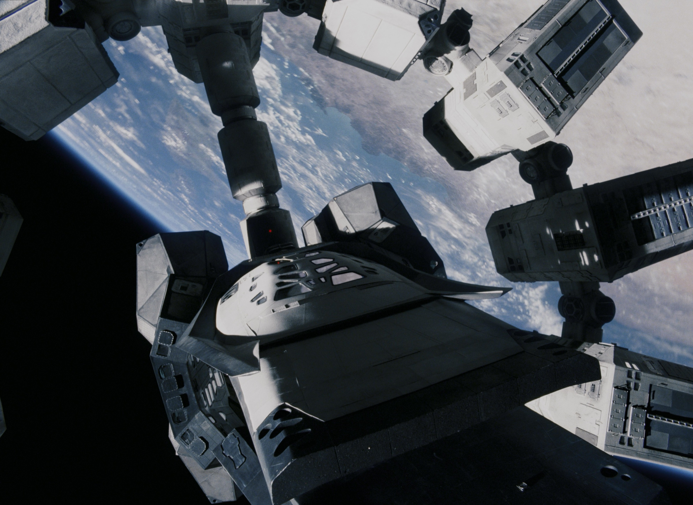
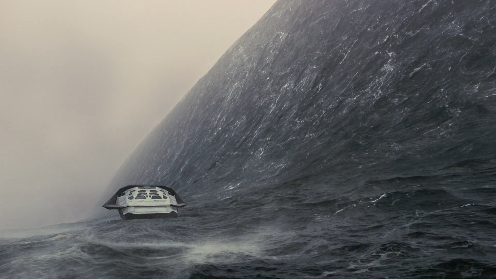
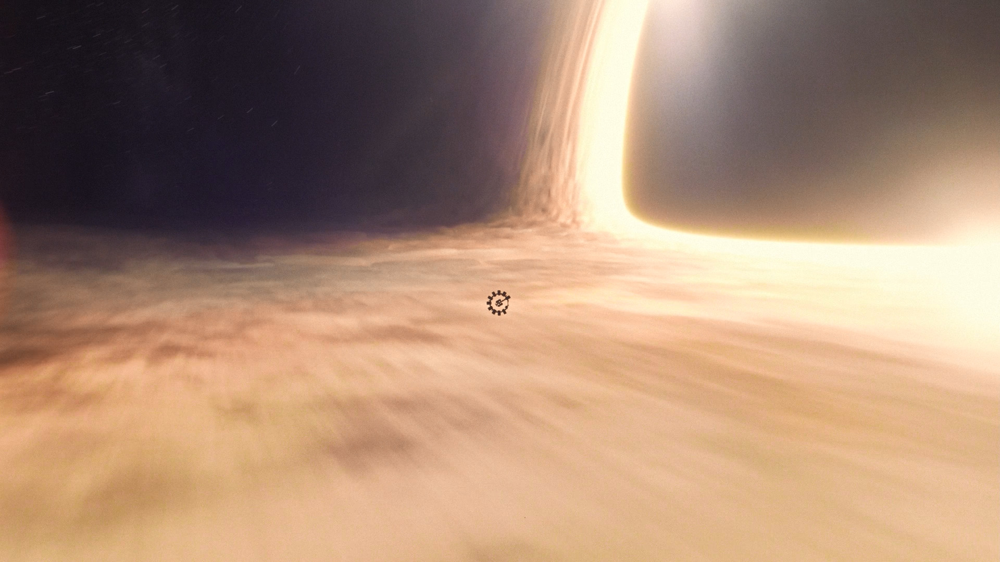
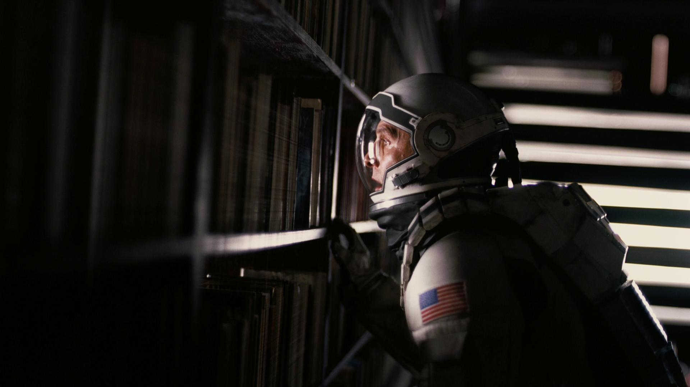
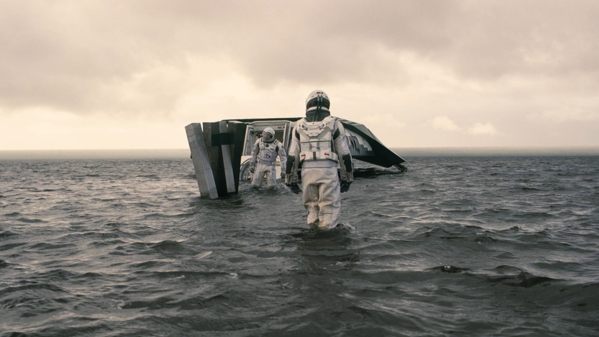
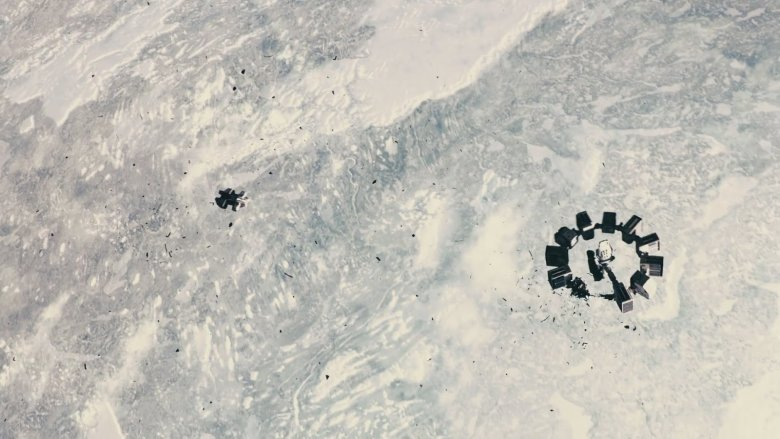
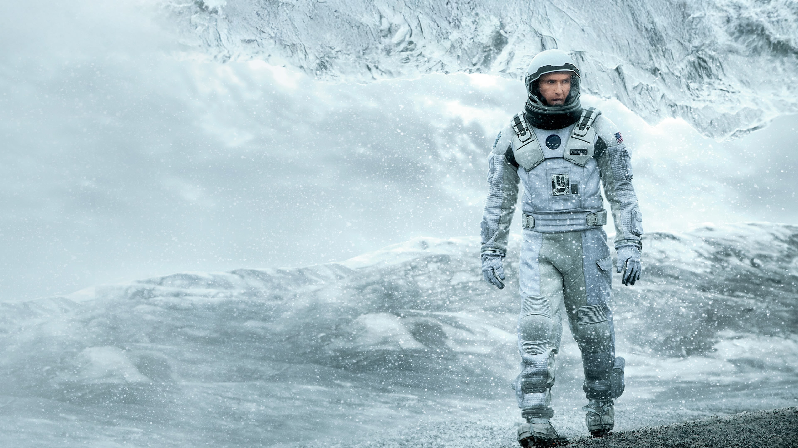
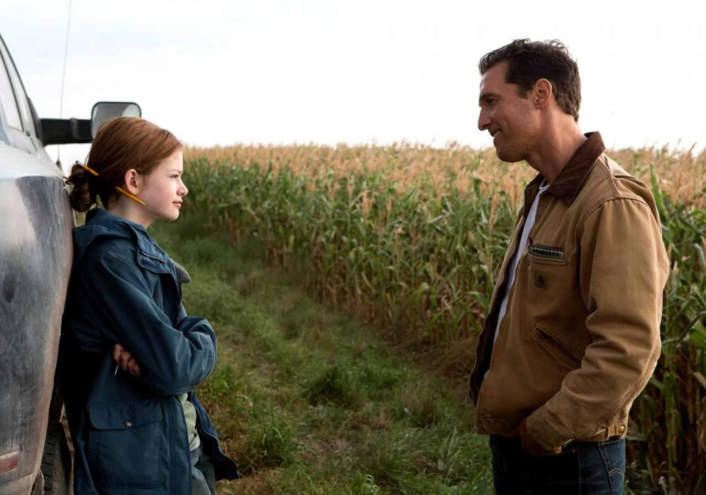
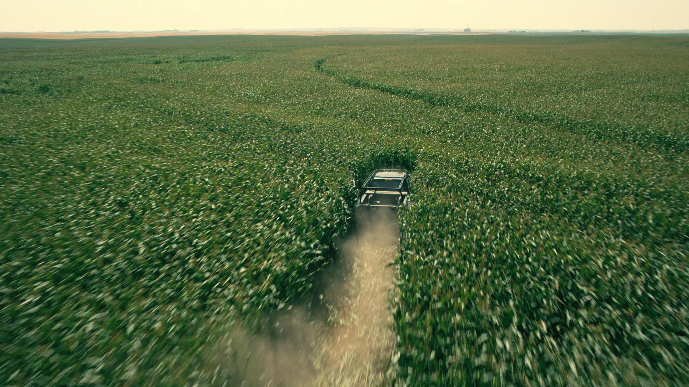

Yıldızlar
Arasında
İnsanlığın geleceği yıldızların ötesindeyse, eve dönmenin bedeli kaç yıl olabilir?
Film dosyasına gir ↓Zamanın içinden geçen bir aile hikâyesi.
Dünya yaşanmaz hâle gelirken eski pilot Cooper, insanlığa yeni bir yuva bulmak üzere galaksiler arası bir göreve katılır. Yolculuğun gerçek ağırlığı mesafe değil, farklı hızlarda akan zamandır.
Yıldızlararası, uzayı fethetme öyküsünden çok daha fazlası: zamanın herkese eşit akmadığı bir evrende sevginin, hafızanın ve verilen sözlerin insanı eve bağlayan bir koordinata dönüşmesini anlatıyor.
Her yolculuk bir vedayla başlar.
Cooper’ın görevi insanlığı kurtarmak; asıl çatışması ise çocuklarının zamanından ayrılmaktır.

Bir saat, yedi yıl.
Yerçekimi zamanı büker; kısa bir keşif Dünya’da geri alınamayacak yıllara dönüşür.

Işığın bile kaçamadığı eşik.
Görevin son ihtimali, zaman ve mekânın bilinen kurallarının dışında saklıdır.

Geçmişe dokunmak.
Cooper için evrenin en güçlü kuvveti, Murph’e ulaşma iradesidir.

Zaman su gibi yükselir.
Buradaki her saat, Dünya'da yedi yıla karşılık gelir.

Dönüşü yakala.
Bir anlık uyum, bütün görevin kaderini değiştirir.

Umut da donabilir.
Yaşama arzusu, en uzak gezegende bile insanı sınar.

Her yolculuk evde başlar.
Bütün kozmik hikâyenin merkezinde bir baba ve kızı vardır.

Gökyüzü yeniden çağırır.
Keşif arzusu, mısır tarlasından yıldızlara uzanır.
Üç yörüngeden bakış
Bilimsel ölçeği, bir baba ile kızının son derece insani hikâyesine bağlayan görkemli bir uzay operası.Metinlerarası editör notu
Görsel ve işitsel tasarımı, zamanın ağırlığını yalnızca anlatmıyor; seyirciye fiziksel olarak hissettiriyor.Kulüp tartışma notu
Filmin en güçlü sorusu şudur: Geleceği kurtarmak, bugün sevdiklerimizden vazgeçmeyi haklı çıkarır mı?Eylül film dosyası